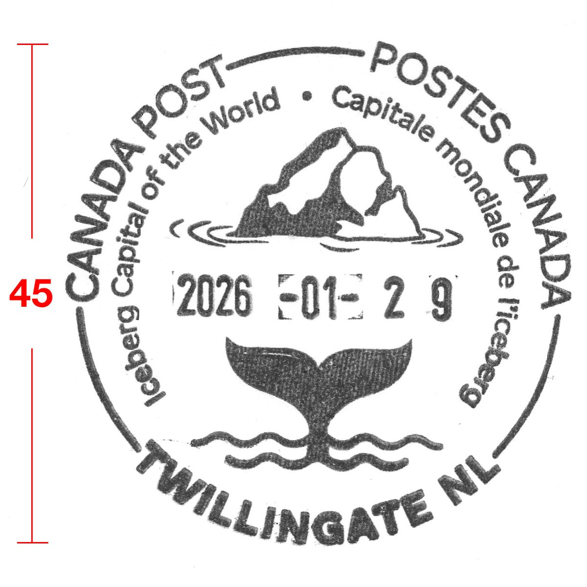

Twillingate PO pictorial cancel
Iceberg Capital of the World – Capitale mondiale de l
- Status
- Active
- Run dates
- 2024-01-01 to 2035-12-31
- Design
- "Iceberg Capital of the World / Capitale mondiale de l"iceberg"; iceberg, whale tail
- Ink colour
- Black
- Designer
- Unknown
- Post office
- Twillingate PO
145 Main St
Twinllingate, NL
A0G 4M0 - Subjects
- iceberg, whale, nature, animal, mammal, wildlife
Collect it by mail. Send your stamped covers, with a stamped return envelope, to the post office address above. How to collect pictorial cancels by mail · en français
 Botwood POAircraft
Botwood POAircraft Norris Arm POFlying Boat Festival International
Norris Arm POFlying Boat Festival International Winterton POTRINITY HALL / CREATE, CONCREGATE, CELEBRATE / CRÉATION, RASSEMBLEMENT, CÉLÉBRATION
Winterton POTRINITY HALL / CREATE, CONCREGATE, CELEBRATE / CRÉATION, RASSEMBLEMENT, CÉLÉBRATION Winterton POWooden Boat Museum of of Newfoundland & Labrador
Winterton POWooden Boat Museum of of Newfoundland & Labrador